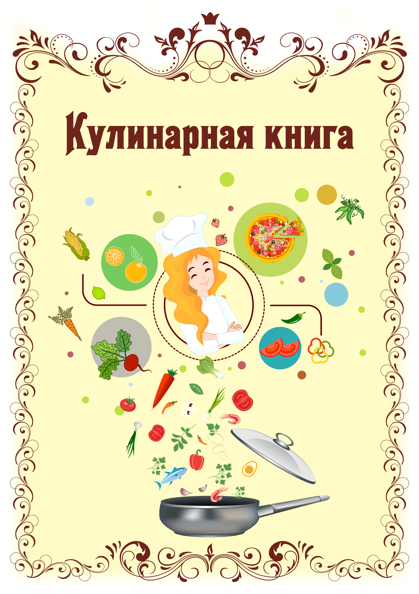

Глявная
Кухни
А что есть у вас в холодильнике?
Этот проект представляет собой сайт, накотором вы сможете подобрать себе любой рецепт из того, что у вас есть в холодильнике 
Найти рецепт(поместить в самый низ, либо совсем убрать)
Новости
Алфавитный указатель кухонь мира
Итальянская
Мексиканская
Русская
Общая
Алфавитный указатель кухонь мира(по нажатию на кнопку открывается указатель)(надо подумать)
Новости(сделать по центру в виде колонны)
Новость 1
Новость 2
Новость 3